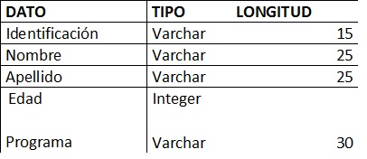

Antes de comenzar a realizar una conexión desde PHP hacia una base de datos, esta debe existir ya configurada, para el desarrollo de esta actividad utilizaremos el motor de base datos MYSQL con una bd llamada: estudiantes y esta a su vez tiene una tabla tbl_datos configurado de la siguiente manera:
